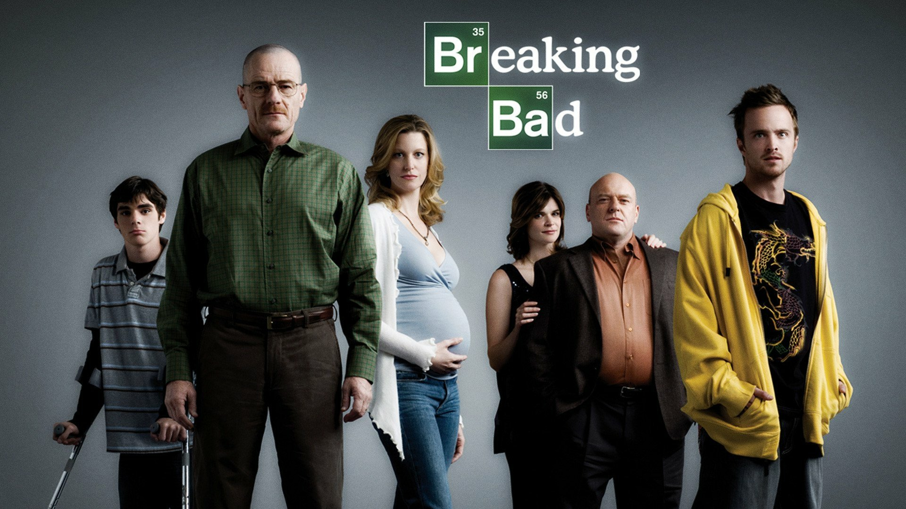

Walter "Walt" Hartwell White, también conocido por su seudónimo clandestino "Heisenberg".
Es un químico y profesor de química de Albuquerque, Nuevo México que,
tras ser diagnosticado con cáncer de pulmón inoperable, decide empezar a fabricar
metanfetamina para poder mantener a su familia provista de cara al futuro.
Walt era un químico prometedor que contribuyó en el auge de la compañía multimillonaria
Gray Matter Technologies, pero salió de la empresa de forma abrupta vendiendo su parte
de la misma por cinco mil dólares. Los fundadores Elliott y Gretchen Schwartz se casan y
hacen una fortuna, mientras que Walt les acusa de apoderarse de sus contribuciones para
tener éxito sin darle ningún crédito.

Jesse Bruce Pinkman es el compañero de Walter White en el tráfico de metanfetamina.
En el instituto, Jesse era un consumidor, fabricante y traficante de poca monta de metanfetamina.
Era un estudiante que prestaba poca atención a las clases de química de su profesor, el propio Walter.
Años después, Jesse se dedica al tráfico de droga con el seudónimo "Cap'n Cook" y
añade polvo de chili a su producto para caracterizarlo.